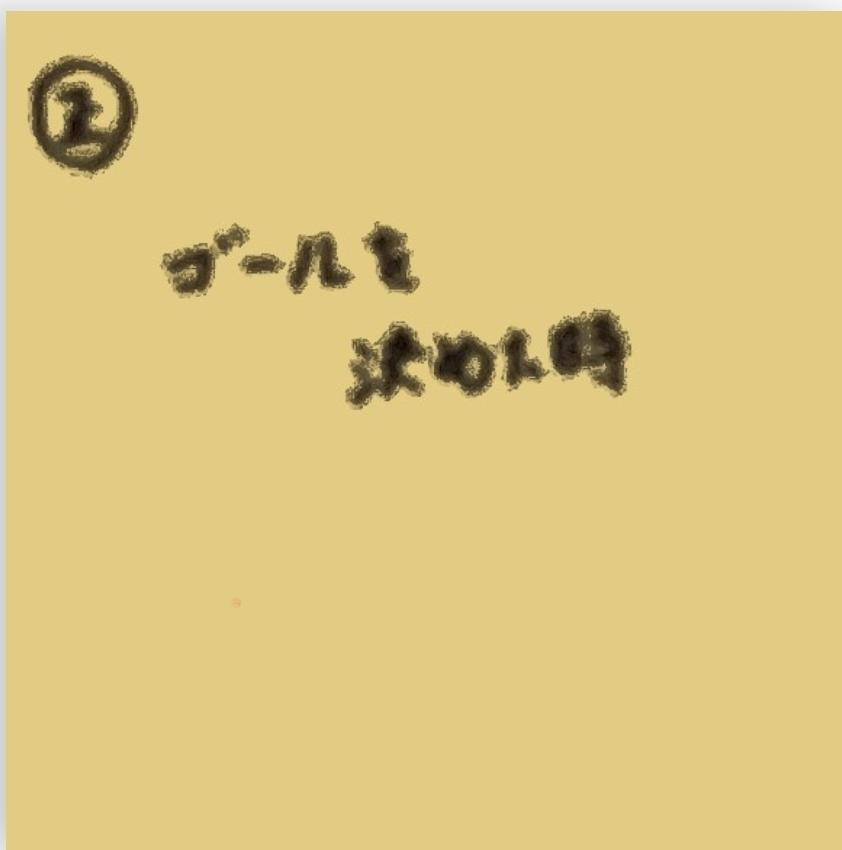
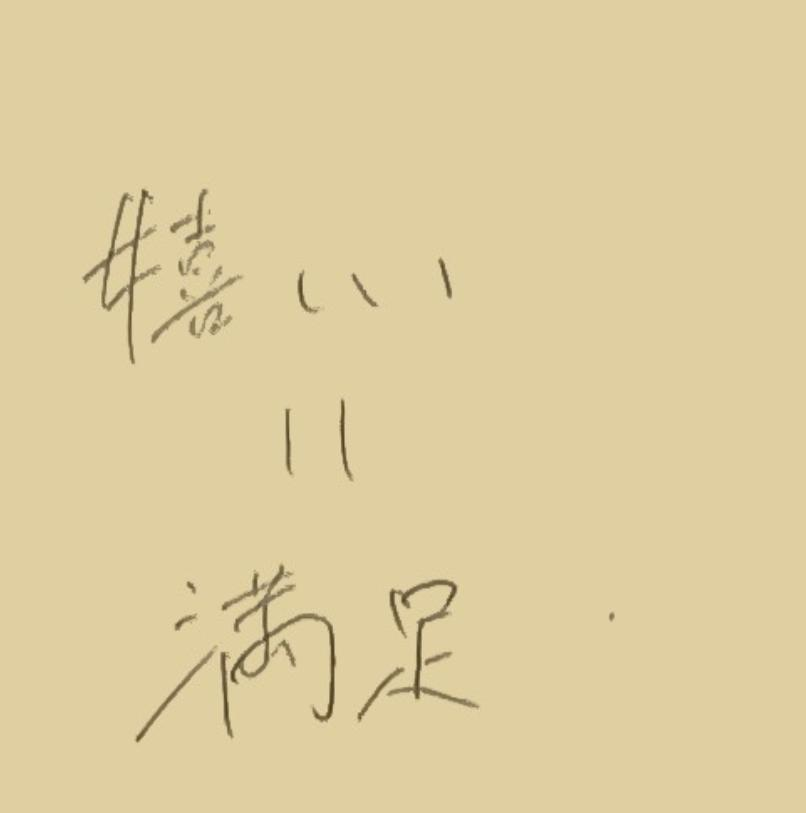
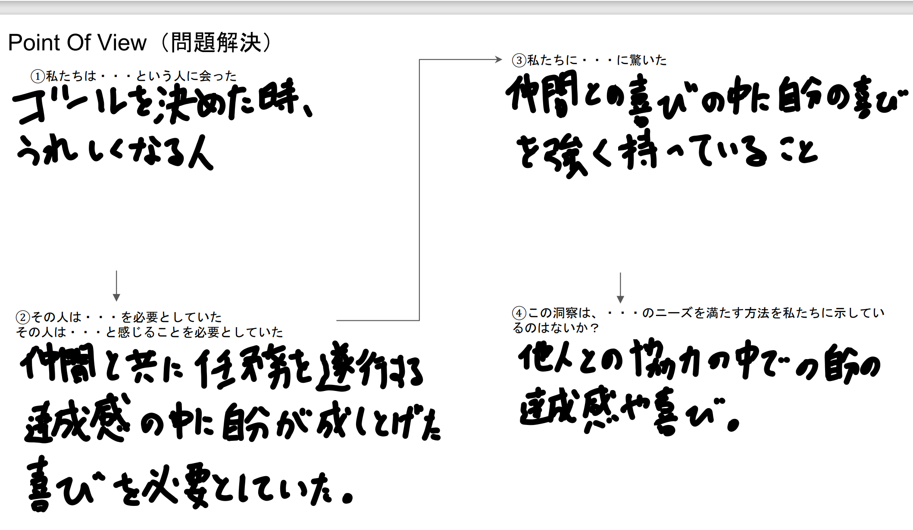

光を操る
【NeoPixelを使ってLEDの色をランダムに光らせよう】
コード
- #include <Adafruit_NeoPixel.h>
- #define PIN 9 // 信号用のピンを指定
- #define NUMPIXELS 5 // LEDの数を指定
- int brightness=50;//明るさ
- Adafruit_NeoPixel pixels(NUMPIXELS, PIN, NEO_GRB + NEO_KHZ800);
- void setup() {
- pixels.begin(); // NeoPixel出力ピンの初期化
- pixels.setBrightness(brightness);
- }
- void loop() {
- pixels.clear(); // すべてのLEDの色を0にセット
- for(int i=0; i<NUMPIXELS; i++) {
- int r=random(0,255);
- int g=random(0,255);
- int b=random(0,255);
- pixels.setPixelColor(i, pixels.Color(100, 255, 100));
- pixels.show();
- delay(1000);
- }
- }
授業資料
正・負の感情 グループワークまとめ
【正の感情】
サッカーでゴールを決めたとき

考察：サッカーでゴールを決めたときというのは、チームや仲間に貢献できたという気持ちや決めるまでの過程があるからという利他的な要因もあれば、あくまで「自分」が決めたことに対するうれしさというエゴや利己的な要因があると考えた。
またこのような考察から自分が責任のある役職（リーダーや責任者、今回はシュートを決める責任）において役割を遂行できた時と似ているのではと考えた。
POV

班の仲間たち